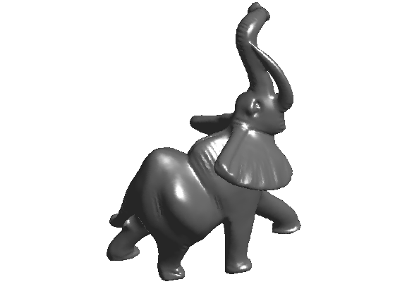
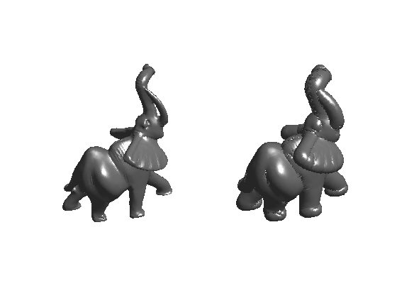
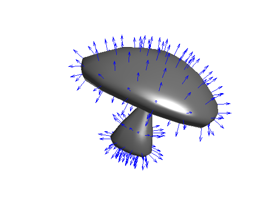
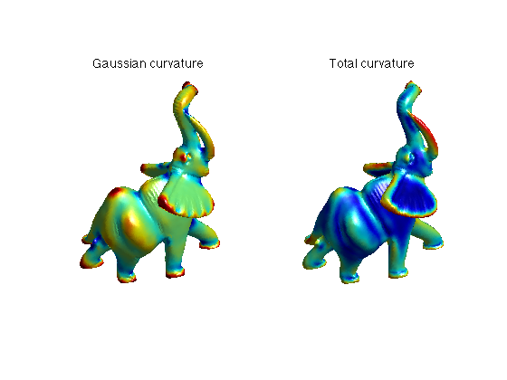
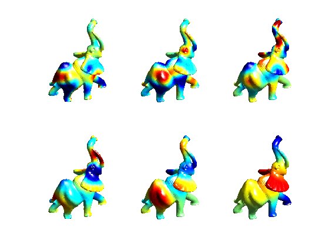
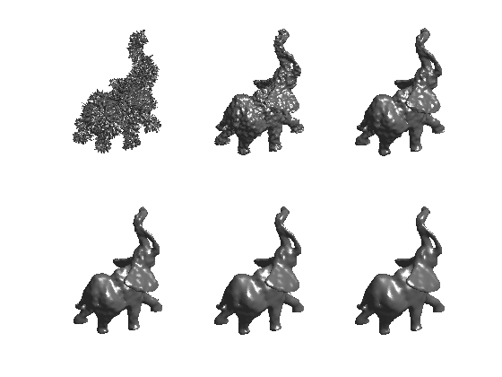
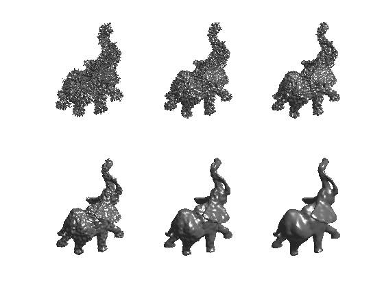
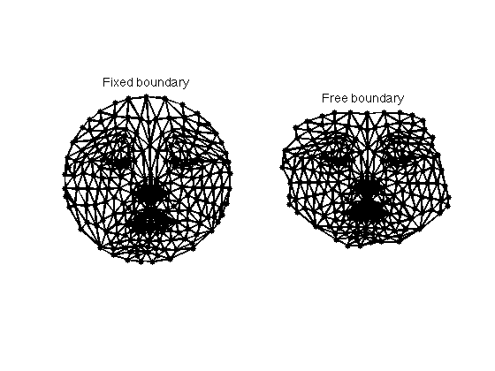
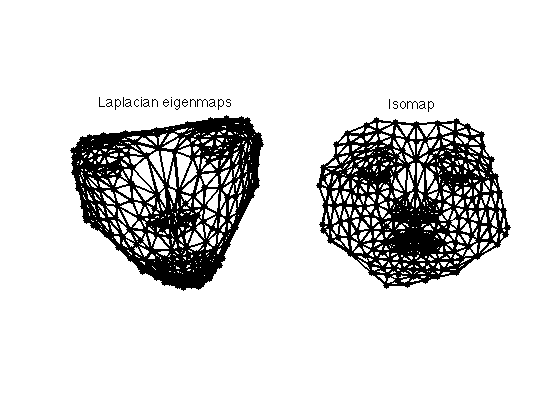
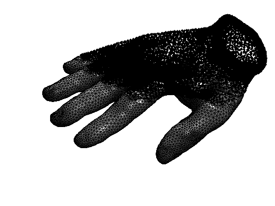

Toolbox graph - A toolbox to process graph and triangulated meshes
Copyright (c) 2008 Gabriel Peyre
Contents
The toolbox can be downloaded from Matlab Central http://www.mathworks.com/matlabcentral/fileexchange/loadFile.do?objectId=5355&objectType=FILE
First add to the path additional scripts.
path(path, 'toolbox/'); path(path, 'off/'); clear options;
3D Mesh Loading and Displaying
A 3D mesh is composed of a vertex array of size (3,n) that contains the position in 3D (or sometimes 2D) of the vertices, and a face array of dimension (3,m) that contains the indexes of each triangulated face.
% load the mesh name = 'elephant-50kv'; options.name = name; % useful for displaying [vertex,faces] = read_mesh(name); % display the mesh clf; plot_mesh(vertex, faces); shading interp;
You can zoom on the mesh and display its triangulated faces
clf; for i=1:4 subplot(2,2,i); plot_mesh(vertex, faces); shading faceted; zoom(1.8^(i+1)); end

You can compute the normal to the mesh, and displace the position of the vertices along the normal.
options.face_vertex_color = []; vertex1 = perform_normal_displacement(vertex,faces,.03); clf; subplot(1,2,1); plot_mesh(vertex,faces,options); shading interp; axis tight; subplot(1,2,2); plot_mesh(vertex1,faces,options); shading interp; axis tight;
Differential Calculus on 3D Mesh
You can compute matrix (sparse) of differential and averaging operators on 3D meshes. You can also compute curvature and normals.
You can compute normals and display them.
% load a mesh name = 'mushroom'; options.name = name; % useful for displaying [vertex,faces] = read_mesh(name); % compute normal per vertex and per face [normal,normalf] = compute_normal(vertex,faces); % display options.normal = normal; clf; plot_mesh(vertex,faces,options); shading interp; axis tight; options.normal = [];
You can compute curvature quantities using local avergaging and PCA analysis.
% load the mesh name = 'elephant-50kv'; options.name = name; % useful for displaying [vertex,faces] = read_mesh(name); % compute the curvature options.curvature_smoothing = 10; options.verb = 0; [Umin,Umax,Cmin,Cmax,Cmean,Cgauss,Normal] = compute_curvature(vertex,faces,options); % display clf; subplot(1,2,1); options.face_vertex_color = perform_saturation(Cgauss,1.2); plot_mesh(vertex,faces, options); shading interp; colormap jet(256); title('Gaussian curvature'); subplot(1,2,2); options.face_vertex_color = perform_saturation(abs(Cmin)+abs(Cmax),1.2); plot_mesh(vertex,faces, options); shading interp; colormap jet(256); title('Total curvature');
A laplacian is an high pass operator that compute second order derivatives.
name = 'elephant-50kv'; options.name = name; % useful for displaying [vertex,faces] = read_mesh(name); % options for the Laplacians laplacian_type = 'conformal'; % slow to compute laplacian_type = 'combinatorial'; % fast, but inexact laplacian_type = 'distance'; % fast and more accurate % compute a normalized Laplacian options.symmetrize = 0; options.normalize = 1; L = compute_mesh_laplacian(vertex,faces,laplacian_type,options); % compute a non normalized Laplacian options.symmetrize = 0; options.normalize = 1; L0 = compute_mesh_laplacian(vertex,faces,laplacian_type,options);
Compute and display some eigenvectors of the Laplacian. They are the equivalent of the Fourier sinusoids on surfaces.
% compute a few eigenmodes nb = 60; opts.disp = 0; [V,D] = eigs(L0,nb,'SM',opts); % warning : it takes lot of time V = real(V(:,end:-1:1)); % display them on the mesh ilist = round(linspace(3,nb-3, 6)); tau=2.2; % saturation for display clf; for i=1:length(ilist) % subplot(1,length(ilist),i); v = real(V(:,ilist(i))); v = clamp( v/std(v),-tau,tau ); options.face_vertex_color = v; subplot(2,3,i); plot_mesh(vertex,faces,options); shading interp; camlight; axis tight; % zoom(zoomf); colormap jet(256); end
Mesh Filtering
You can filter a mesh by applying a filter operator, or iterating several time the filtering, which corresponds to the resolution of the heat equation on the mesh
First we create a noisy mesh by displacement of the vertices along the normal direction (those are the most distructive displacements).
normals = compute_normal(vertex,faces); rho = randn(1,size(vertex,2))*.02; vertex1 = vertex + repmat(rho,3,1).*normals;
Then we compute a filtering operator (low pass)
% parameters for the operator laplacian_type = 'distance'; options.symmetrize = 0; options.normalize = 1; % it must be normalized for filtering options.verb = 0; W = compute_mesh_weight(vertex,faces,laplacian_type,options); % This is the corresponding laplacian L = compute_mesh_laplacian(vertex,faces,laplacian_type,options);
We apply iteratively the operator to get filtered versions of the mesh.
vertex2 = vertex1; clf; options.face_vertex_color = []; for i=1:6 subplot(2,3,i); plot_mesh(vertex2,faces,options); axis tight; shading interp; vertex2 = (W*(W*vertex2'))'; end
Something better is to update W at each filtering step. You can also try to enforce various quantity during the iterations, for instance the volume of the mesh.
Instead of iterative filtering, one can solve for the heat diffusion flow.
Tlist = [0 2 5 10 20 40]/4; options.dt = 0.3; options.face_vertex_color = []; clf; for k=1:length(Tlist) options.Tmax = Tlist(k); vertex2 = perform_mesh_heat_diffusion(vertex1,faces,L,options); subplot(2,3,k); plot_mesh(vertex2,faces,options); shading interp; axis tight; end
You can try to select the optimal number of iterations for applying W or the optimal time for the heat equation so that to minimize the denoising error.
Mesh parameterization
Mesh parameterization corresponds to the computation of a 2D position for each vertex of a 3D mesh, so that the 2D->3D mapping is bijective.
First load a small mesh and set up parameters
name = 'nefertiti'; options.name = name; [vertex,faces] = read_mesh(name); A = triangulation2adjacency(faces); % you can try with other boundary type options.boundary = 'circle'; % you can try with other Laplacians options.laplacian = 'conformal';
The fixed boundary parameterization is guaranteed to be valid is the mesh is homeomorphic to a disk and if the boundary of the planar domain is convex. This is the Tutte embedding theorem.
% compute the layout in 2D options.method = 'parameterization'; options.verb = 0; xy = compute_parameterization(vertex,faces,options); % display the parameterization clf; subplot(1,2,1); plot_mesh(vertex,faces,options); shading faceted; axis tight; subplot(1,2,2); plot_graph(A,xy,'k.-'); axis tight; title('Parameterization');

In order to reduct the distortion, it is possible to relax the boundary condition and sovle for a Neumann boundary condition. The parameterization is not guaranteed to be valid anymore.
% compute the parameterization options.method = 'freeboundary'; xy1 = compute_parameterization(vertex,faces,options); % display the parameterization clf; subplot(1,2,1); plot_graph(A,xy,'k.-'); axis tight; title('Fixed boundary'); subplot(1,2,2); plot_graph(A,xy1,'k.-'); axis tight; title('Free boundary');
Another option is to use dimensionality reduction technics, for instance Laplacian eigenmaps (first eigenvectors of the laplacian) or Isomap (geodesic distances computations).
% perform dimensionality reduction options.method = 'flattening'; xy2 = compute_parameterization(vertex,faces,options); options.method = 'isomap'; xy3 = compute_parameterization(vertex,faces,options); % display clf; subplot(1,2,1); plot_graph(A,xy2,'k.-'); axis tight; title('Laplacian eigenmaps'); subplot(1,2,2); plot_graph(A,xy3,'k.-'); axis tight; title('Isomap');
Tetrahedral Mesh Loading and Displaying
You can load and display volumetric tetrahedral meshes. Important: .tet files and not included in the toolbox distribution (too large files). You should download them from
[vertex,face] = read_tet('../toolbox_graph_data/tet/hand.tet');
clf;
plot_mesh(vertex,face,options);
